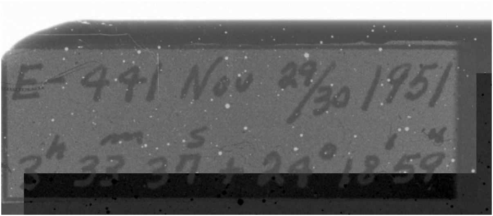
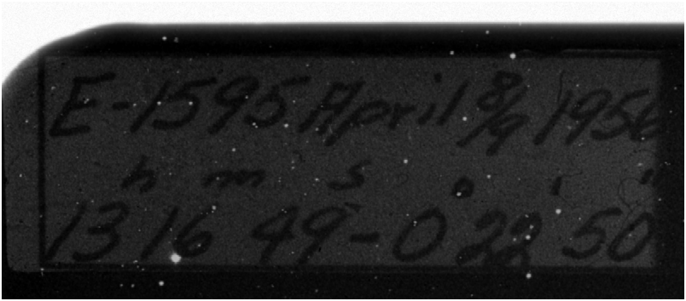
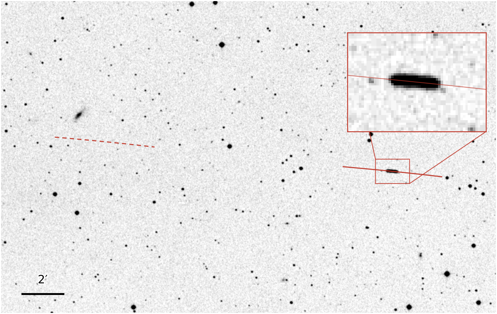
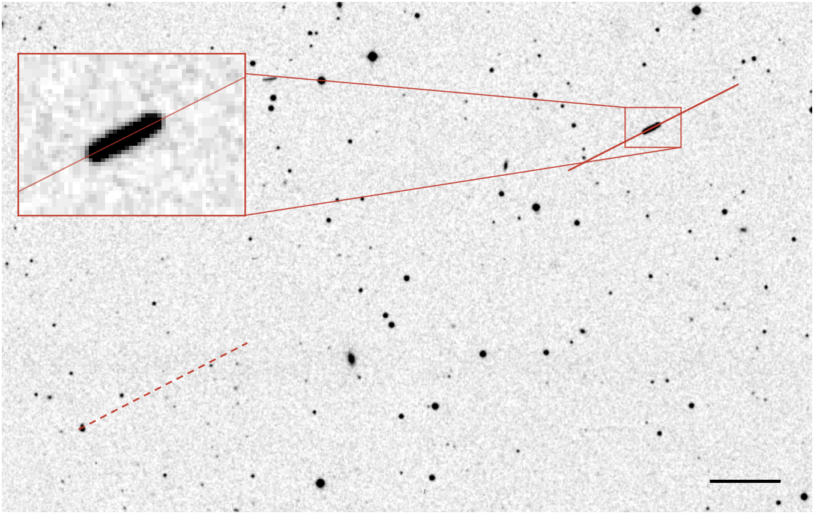

The Palomar Sky Survey
Images were taken on plates using Palomar’s 48-inch Schmidt telescope, which was built to photograph wide areas of sky. Each plate is a sheet of glass 14 inches square, and covers a patch of sky 6.5 degrees across (about thirteen full Moons). Every patch was photographed through both a blue and a red filter, with red exposures lasting 40 to 60 minutes. Copies of the plates were scanned in the 1990s, and astronomers now work from those scans.
VASCO compared the red plates with three modern catalogues of the sky: Gaia, Pan-STARRS, and WISE. A point of light became a transient if no modern catalogue lists anything within 5 arcseconds of it. An arcsecond is a 3,600th of a degree, and 60 arcseconds make an arcminute. The public catalogue holds 107,875 such transients spanning 635 plates.
Many transients are likely to be artefacts, such as dust on the glass, specks in the photographic emulsion, or marks made in copying and scanning. The catalogue has not been checked by eye. The VASCO team has since trained a machine-learning model that rates how likely each transient is to be genuine, but the catalogue was built before this and includes every transient whatever its rating. The ratings are not yet public, so our analysis uses the whole catalogue.
When was each plate taken?
In the sky map above, 74 plates are outlined with a dashed line. These are plates that were left out of VASCO’s tests, due to a problem with their dates.
The date of each plate is usually taken from the digitised archive at the Space Telescope Science Institute. This archive stores dates in a short block of text called a header, which are attached to each scan.
In our analysis, we have found that around 75% of plates have archive dates which are one day early. Since various statistical tests in the following work rely on knowing when each plate was taken, we have checked the date of every plate and made corrections where required.
Plate labels
The observer wrote each plate’s number and date by hand, and the writing was photographed onto the edge of the glass. Since observing nights spanned two calendar days, observers wrote both dates; for example, “Nov 29/30 1951”.
Astronomers keep time using Universal Time (the clock at Greenwich), which is seven or eight hours ahead of California depending on daylight savings.
Exposures began after dark in California, when it was already past midnight in Greenwich, so the second date shown on the plates is the correct one. For the two example plates below, we find that the archive dates incorrectly use the first rather than the second written date.


Using asteroid trails to check dates
Asteroids move relative to stars, typically by around half an arcsecond a minute. During long image exposures, asteroids thus appear as short trails, while stars appear fixed since the telescope tracks them. Using NASA’s JPL Horizons service, we can determine the position of every known asteroid on any night in the 1950s with high precision.
For two example plates below, we show the trail a known asteroid would follow on the archive’s date (red dashed line) and where it would be a day later (red solid line). In one day, an asteroid moves around a quarter of a degree, so the two positions are well separated on the plate.
Using the archive’s date, we find no trail where the asteroid is predicted to be. One day later, however, we find trails left by asteroids at the expected position. Across the plates we checked, 72 asteroid trails across 44 plates appear one day after the archive date. On another 14 plates, 22 trails confirm that the archive date is correct, so the method is able to distinguish cases.


Correcting the dates
Palomar numbered the red plates in the order they were taken. The one-day error is not scattered at random: it affects long, unbroken runs of plate numbers, listed in the first table below. Palomar’s own log of the survey also survives. It records each night by its evening date, so the correct date is the log’s date plus one.
Where the log, the asteroids, and the handwritten labels cover the same plates, they agree on 108 of 110 cases. The two exceptions are typing errors in the log, which we correct by hand. For every other plate in a run with a one-day error, we add one day to the archive date.
Across the 817 plates we dated (which include all 635 in the catalogue), Palomar’s logs date 601, asteroid trails 55, and the handwritten labels another 55. Runs of plate numbers settle a further 104. That leaves two plates, XE723 and XE884, with no evidence for their date; neither is in the catalogue, so they play no part in the tests.
Eight plates don't follow this pattern, and are listed in the second table below. Six of these plates are wrong by months or years, and we correct each of them by hand. All of the date corrections can be found in our code repository.
| Plate serials | Taken | Archive date |
|---|---|---|
| up to E-28 | Nov 1949 | Correct |
| E-30 to E-637 | Dec 1949 – Dec 1952 | One day early |
| E-639 to E-962 | Jan 1953 – Jan 1954 | Correct |
| E-968 to E-1610 | Jan 1954 – Jun 1956 | One day early |
| E-1611 to E-1616 | Apr 1957 | Correct |
| E-1617 to E-1618 | Dec 1957 | One day early |
| Plate | Serial | Archive date | Correct date (UT) | Note |
|---|
The mix of date conventions also explains most of the outlined plates on the sky map above. VASCO’s tests use only plates taken on one of 370 nights listed in Palomar’s log. The log names each night by its evening date, so a plate taken on the night of 8–9 April is listed under 8 April.
A plate whose archive date is one day early, 8 April, matches the list. A plate with the correct archive date, 9 April, matches only if Palomar also observed on the night of 9–10 April. If Palomar did not observe on the following night, the plate is dropped, which happened to 71 of the 74 outlined plates. If Palomar did observe that night, the plate is kept but counted as part of the following night, which happened to 88 plates.
With the dates corrected, every one of the catalogue’s 635 plates falls on a night in Palomar’s log, so our analysis uses them all.
Number of transients varies greatly across plates
The 635 plates in the catalogue show a large degree of variation in how many transients they exhibit, ranging from 1 to 4,166.
More variation than expected by random chance
VASCO’s Earth shadow test (see below) scores its result by treating every transient as an independent event: each has the same small chance of falling inside the shadow, regardless of other transients.
If transients were independent of one another and spread uniformly over the sky, plates would differ only by counting noise. An average plate holds 170 transients, and the counting noise on that is about its square root (13), so almost every plate would hold between 144 and 196 transients.
However, only 105 of the 635 plates fall within this range. The actual counts spread smoothly from a handful of transients to several hundred: 82 plates hold fewer than 30 transients, while 18 hold more than 500. Some of this variation follows from where each plate points on the sky, as the sky map above shows.
How many transients a plate holds depends on the plate itself, so transients cannot be treated as independent events. A count drawn from only a few plates, such as the ten crossed by Earth’s shadow, can therefore vary much more than counting noise suggests.
The blue histogram shows the distribution of transient numbers across the 635 plates. The final bar contains the three plates with more than 1,000 transients.
The orange shaded band shows the range expected if transients were spread uniformly and independently. In this case, each plate would exhibit a number of transients close to the average (170), varying only by counting noise.
More transients at plate edges
Across the middle of a plate, transients are spread evenly. Towards the edges they grow denser, reaching up to about two and a half times the central density. Random positions that the VASCO team generated as a check show no such rise.
The edges of a plate are set by where the telescope happened to point, and the sky has no reason to be busier there. The rise most likely comes from the plates themselves, or from how they were copied, scanned, and matched. Near the edge, star images blur and can fail to match a modern catalogue.
Fewer transients near the Milky Way
A point of light is kept as a transient only if no modern catalogue lists anything within 5 arcseconds. Near the Milky Way, stars are much more crowded, causing a greater proportion of transients to fail the 5 arcsecond threshold.
A typical plate within 5 degrees of the Milky Way holds 28 transients. Counts rise steadily away from the galactic plane, and beyond about 40 degrees a typical plate holds around 190, seven times as many.
Dust between the stars is also linked to fewer transients. Clouds of dust in our own Galaxy dim everything behind them, and the sparse patch near Taurus and Perseus on the sky map lies behind some of the nearest of these clouds.
To separate dust from crowding, we compared plates more than 20 degrees from the Milky Way, where stars are not crowded. The 31 plates that look through the most dust hold a median of 89 transients, around half the 183 held by the 252 plates that look through the least. Dust does not cover the whole of the Taurus–Perseus patch, however, and we have not found an explanation for the shortfall across the rest of it.
Do transients avoid Earth’s shadow?
An object in orbit is seen only by the sunlight it reflects. When it passes into Earth’s shadow, it should therefore go dark.
VASCO considered objects in geostationary orbit (36,000 kilometres up), where a single orbit takes one day and a satellite stays above a spot on the equator. At this height, Earth’s shadow covers a disc of sky around 17 degrees across, centred on a point directly opposite the Sun. If some transients are due to glints from objects in orbit, the shadow disc should exhibit fewer transients than the same area of sky elsewhere.
Flaws in the photographic emulsion, dust on the glass, and marks from copying have no connection with where Earth’s shadow fell. A shortfall inside the disc, beyond what the differences between plates can produce, would therefore point to something in orbit. VASCO found such a shortfall, and we find it too. Where we differ is in the statistical interpretation of the deficit.
“A highly significant (∼22σ) deficit of POSS-I transients within Earth’s shadow … still present though at reduced significance (∼7.6σ) when a more realistic plate-based coverage is considered.” Villarroel et al., Publications of the Astronomical Society of the Pacific, 2025
Nine plates intersect Earth's shadow
Across the 635 plates in the catalogue, Earth's shadow happened to intersect with 10 of them. Brian Doherty, a co-author of the 2026 paper, found nine among the plates in VASCO's tests, as do we; the tenth, XE472, was taken on the night of 18–19 November 1949, two nights before VASCO's list of nights begins.
Throughout this section, we use the central 6 by 6 degrees of each plate, the plate size VASCO use in their own analysis. VASCO’s random positions cover this square evenly on every plate.
Using the corrected dates we describe above, the areas of those plates falling in Earth's shadow hold a total of 335 transients.
Together, the shadowed areas cover 3.34 plates’ worth of sky (all of plate XE422, two-thirds of two others, nearly half of XE472, and smaller slices of the remaining six). An average plate holds 158.5 transients in this square, so if transients were spread evenly across the survey, the shadowed parts would be expected to hold about 530 transients (3.34 × 158.5).
With the archive dates VASCO used, on the nine plates in their tests, the shadow falls slightly differently, and the count is 431 against 607 expected: a similar shortfall of about a third.
Measuring the probability of this deficit
VASCO scores this shortfall with a binomial test, which treats every transient as an independent event. Their headline figure of 22 standard deviations compared the shadow with its share of the whole sky; their 7.6 standard deviations used each plate’s actual coverage, as we do here. With that model and our corrected dates, the expected 530 would vary by about its square root (23), which puts the observed 335 about 8.5 standard deviations below expectation.
Transients are not independent, however: as shown above, transient counts on plates differ far more than counting noise permits. The count inside a given shadow therefore depends on whether the plate it falls on happens to be rich or poor in transients. To measure how far that count can move, we took the ten Earth shadow patches, each with its real shape and position, and laid them on ten plates chosen at random.
A randomly chosen plate has no connection to Earth's shadow, so any shortfall in such trials comes from chance alone. Across 20,000 such trials, a shadow transient count of 335 or fewer turned up 17% of the time. This corresponds to a statistical significance of 0.9 standard deviations.
Where the shadow fell on plates also matters. Six of the ten shadow plates lie towards Taurus and Perseus, where the catalogue holds unusually few transients, so an average plate overstates what they should hold. Wesley Watters and colleagues made the same point, and found with their own random-shadow test, on a smaller public part of the catalogue, that a deficit this large arises by chance about 30% of the time. Drawing our random plates only from those near each shadow plate on the sky gives a probability of around one in eight (1.2 standard deviations).
VASCO also repeated their test using only transients within 2 degrees of each plate’s centre, away from the dense edges. In that region we count 63 transients in shadow against 116 expected, a shortfall random plates match about one time in eight.
Seen from Palomar rather than from the centre of the Earth, the shadow at geostationary height shifts by several degrees and crosses seven plates instead of ten. This version of our analysis gives 283 transients against 503 expected, a shortfall random plates match about one time in seven (1.1 standard deviations).
Taking a closer look at the plates in shadow
Earth’s shadow crosses ten of the catalogue’s plates. One of them, XE422, lies wholly inside Earth's shadow, so it has no sunlit area to compare with. The other nine plates are shown below, with the position of every transient from VASCO’s catalogue indicated.
The plates differ significantly in terms of total transient counts. XE415 holds 301 transients, while XE355 only holds 8. Within a plate, transients bunch into clumps and gather along some edges, while some plates are almost empty in places. For example, XE640’s transients crowd along its northern edge and are missing from two large rounded regions. The sky has no reason to be empty in two round patches of a single plate, so these gaps most likely come from the plate itself, or from how it was scanned and searched.
Earth’s shadow splits each plate in two. On XE617 the shadow covers 68% of the plate, and holds 33 of its 36 transients. On XE640 it clips 4% of the plate, in a corner that holds none of its 177 transients.
Fitting the shadow transient density
The claim is that transients are rarer in Earth’s shadow. Expressed as a measurement: in the shadowed part of a plate, transients are r times as dense as in the sunlit part. With no Earth's shadow effect, the ratio r should be 1. If some transients genuinely vanish in the shadow, r should be below 1.
In practice, r compares two shares on each plate: the share of its transients that lie in the shadowed part, and the share the shadowed part would hold with no effect. Because transients are denser towards the edges and corners of every plate (see the plate maps above), this second share is not simply the shadowed area. We weight each part of the plate by the average density of transients there, measured only on the 625 plates that Earth’s shadow never crossed, so a real shortfall in the shadow cannot affect the weights.
XE358, for example, has 14.5% of its area in shadow, which with no effect would hold 15.7% of its transients. It actually holds 17% (44 of 262). If transients vanish in the shadow, their share should fall below the expected share, and the ratio r measures by how much.
Because each plate is compared only with itself, it does not matter how many transients a plate holds in total. The variation between plates, large as it is, plays no part here.
The single value of r that best fits all nine plates together is 1.02: transients are as dense in shadow as in sunlight. If every transient were an independent event, counting statistics would put r between 0.94 and 1.11.
The plates themselves show that this uncertainty is too optimistic: single-plate ratios run from 0 on XE640 to 5 on XE617, a much wider spread than counting allows. In 5 we measure the real uncertainty, using trials built from the catalogue’s other plates.
Finding the real uncertainty
Counting statistics treat every transient as independent. To measure the real uncertainty, we ran the same fit on plates where no shadow effect is possible. Each trial lays the nine real shadow outlines onto nine other plates that Earth’s shadow never crossed, and counts the number of transients inside and outside the shadow. In these trials, random plates are selected to contain a similar number of transients to the corresponding plates in the real analysis.
Over 20,000 such trials, the fit gives a typical r value of 1.04, with the middle 68% of results falling between 0.83 and 1.28. Our best fit result on the nine genuine plates (r = 1.02) falls well within this range, indicating that there is no evidence of reduced transient signals in Earth's shadow beyond random chance.
The same trials show that the fit can find a real shortfall. When we remove transients from inside the shadow outlines on the random plates, so that they are only 0.71 times as dense there (a shortfall as large as VASCO’s), the fit returns a value as high as 1.02 only about one time in 15.
These results hold when the random plates are selected differently, when each shadow is instead moved around on its own plate, or when any one plate is left out.
Judged against a data-driven null distribution rather than counting noise, the pooled shortfall falls from 8.5 standard deviations to 0.9. Within each plate, transients are also found to be no rarer in shadow than in sunlight: the best-fit ratio is 1.02, and at 90% confidence level the true ratio lies between 0.70 and 1.48.
Earth’s shadow also crosses 22 plates south of the celestial equator, beyond the edge of VASCO’s catalogue. Adding these plates would allow the same test to be performed with around three times as much shadowed sky.
Do transients cluster around nuclear tests?
During the sky survey, the United States tested nuclear weapons in Nevada and the Pacific. VASCO’s machine-learning study (Scientific Reports, 2026) reported that observing nights within a day of a US nuclear test held more transients than other nights, and put the chance of this happening by accident at about one in forty (p = 0.024). The 2026 paper describes the timing as highly specific, and argues that this points to a genuine physical association rather than a quirk of when the telescope was observing.
We find the same excess. Most of it, however, comes from the photographs themselves. The nights near nuclear tests were busy observing nights, when Palomar took more plates than usual, with every plate contributing its own transients. Once the comparison allows for this, and for where the telescope pointed, no significant relationship between transient counts and nuclear tests is found.
“The pattern of findings in these sensitivity analyses indicated that the nuclear-transient association was highly specific temporally, consistent with it reflecting a physical association.” Bruehl, Doherty, Streblyanska & Villarroel, Scientific Reports, 2026
VASCO’s test
VASCO’s test works in two stages. Firstly, it determines how many transients the nights within a day of a nuclear test hold per night, compared with all other nights. Then it picks the same number of nights at random, thousands of times over, and counts how often random nights show as many or more transients. If random nights rarely do as well, the excess is unlikely to be due to chance.
We ran the same test, counting each transient once rather than weighting it by VASCO’s machine-learning score. Using the uncorrected archive dates VASCO used, the 26 nights near tests hold 1.69 times the usual number of transients. We find that random nights do as well about one time in 33, or 1.9 standard deviations, close to VASCO’s one in forty (2.0 standard deviations). Using every plate in the catalogue on our corrected dates (see above), 17 nights fall within a day of a nuclear test. They hold 1.55 times the usual number of transients, with random nights doing as well around one time in 16 (1.5 standard deviations). Even with corrected dates, the excess is still present.
The 2026 paper also finds the excess to be strongest on the day before a test. Using corrected dates, we find the strongest day to be the day of the test itself.
Counting photographs, not nights
VASCO’s test counts transients per night, but a night’s transients come from its photographs. The catalogue holds anything from zero to eight plates per night: it has plates on 309 of the 373 nights in Palomar’s log for the survey, 1.7 plates per night on average.
The 17 nights near nuclear tests were busier than other nights. They average 1.94 plates a night, against 1.69 across the survey and 1.57 on other nights in the same months. Only 2 of them have no plates in the catalogue, against 62 of the other 356.
Counted per plate rather than per night, the excess falls from 1.55 to 1.35.
Accounting for where the telescope was pointed
The sky above Palomar changes through the year as Earth orbits the Sun. On spring nights, the telescope faced away from the Milky Way: plates taken from March to May lie 47 to 58 degrees from it on average, against about 20 degrees from July to December.
Away from the Milky Way, there are fewer stars. A point of light is discarded from the VASCO transient catalogue if a known star lies within 5 arcseconds of it. Away from the Milky Way, a higher proportion of transients are thus retained.
Per plate, March to May hold 203 to 267 transients, against 110 in July. The link is not perfect, however: August and November plates hold close to 200 transients each (199 and 192), despite lying only about 24 degrees from the Milky Way.
Of the 17 nights near nuclear tests, twelve fall between March and May; the other five fall in November 1951, during a series of Nevada tests. Their plates lie a little further from the Milky Way than the average plate, which on its own would give them about 10% more transients.
VASCO’s test, allowing for photographs and pointing
Busy nights, with plates pointing away from the Milky Way, would hold more transients regardless of the nuclear testing schedule (see 2 and 3 above). When VASCO selected nights at random from across the survey for their statistical test, they did not allow for this.
A like-for-like comparison is the number of transients each night should hold, given how many photographs were taken and where the telescope was pointed. Using a curve fitted to all 635 plates, we give every plate an expected transient count based on its distance from the Milky Way; a night’s expected count is the sum over its plates.
Measured against expected counts, the nights near nuclear tests hold 1.20 times their expected number, rather than 1.55. Random nights match them about one time in seven (a 1.1 standard deviation effect).
Much of the remaining 20% comes from three photographs, each holding three to four times its expected number of transients. Leave out any one of these photographs, and the excess falls to about 10%.
The choice of a ±1 day search window can also be varied. We tried every window from a few days to two weeks either side of the tests, each measured against expected counts. Once accounting for the number of windows tried (the look-elsewhere effect), no analysis reaches a significance beyond 1.0 standard deviations.
As VASCO found, we confirm that nights close to US nuclear tests do hold more transients. The majority of this excess can be explained by how many photographs were taken, and where the telescope pointed.
The remaining excess of 20% is not statistically significant, when compared to the data-driven null distribution. However, further investigations of the remaining excess remain well motivated.
Do transients form geometric patterns?
A flat object tumbling in orbit would flash each time it caught the Sun, leaving a line of points during a long plate exposure. VASCO searched for such alignments and shortlisted five candidates. Their best candidate was quoted at 3.9 standard deviations, corresponding to an estimated 1 in 10,000 chance of occurring by chance.
A catalogue of 100,000 unevenly spread points could contain many chance alignments. Three questions naturally arise:
- Do the alignment quality checks used introduce biases in the directions of the alignments they can find?
- Does the real transient catalogue contain more alignments than expected by random chance?
- What do the strongest alignments look like?
“We provide a shortlist of the most promising candidate alignments, including one with ∼3.9σ statistical significance.”Villarroel et al., Publications of the Astronomical Society of the Pacific, 2025
Searching for alignments in all directions
VASCO kept a set of transients only if its two sky coordinates, right ascension (east–west) and declination (north–south), rise and fall together almost perfectly: a correlation coefficient (Pearson’s r) above 0.99. This approach works for diagonal lines. However, along an east–west line, declination does not change, so there is nothing to correlate, and the line is rejected; the same happens to north–south lines.
In simulations (image below), the VASCO method keeps 99% of diagonal lines, 24% of lines 2 degrees from east–west, and only 1% of lines running exactly east–west. A geostationary satellite stays fixed in the sky above the observatory while the telescope follows the stars, so on the plate it moves exactly east–west. Objects at the same height on slightly tilted orbits move close to east–west too. VASCO’s selection rejects almost all of the tracks such an object would leave.
The same alignment task arises in particle physics, where the paths of charged particles must be reconstructed from hits they leave in a detector. The simplest tracking method fits a straight line through a set of points that could form a track, resulting in a track candidate. The quality of each candidate can be assessed, by checking how far the points lie from the line of best fit. Such a method can be applied in all spatial directions without losing signal, including along the east-west direction in this case.
Fitting every track candidate
VASCO’s five shortlisted alignments came from an earlier list of 298,165 candidate transients (Solano et al. 2022). Only one of their 24 transients appears in the later, cleaner catalogue of 107,875 transients that VASCO uses for its other tests. We have applied our track-fit method to the full catalogue of 107,875 transients.
We treated every set of three to six transients up to 15 arcminutes long as a track candidate, fitted a straight line through it, and recorded how closely its points follow the line. Two sources closer than about 4 arcseconds (the width of a star’s image on these scans) blur into one, so we ignored candidates with points closer than 8 arcseconds. The released catalogue itself holds almost no transients closer together than that. Three of VASCO’s five shortlisted alignments contain points 1 to 5 arcseconds apart, so they could not appear in the catalogue, regardless of the method used to search for alignments.
The position of each transient on a scan is uncertain by about an arcsecond. As such, even points from a genuine straight track can stray from the line by about that much. Each track fit is scored with a χ² per degree of freedom (χ²/ndof), which compares the points’ actual distances from the line with a one-arcsecond uncertainty. A genuine track gives a value near 1 or below. Points scattered loosely about the line give a much larger value.
A good fit alone does not make a track stand out: in crowded parts of a plate, pure chance can cause transients to align frequently. We therefore give each track candidate a track score: the number of tracks of the same length that would arise by chance in a 10 arcminute box around the candidate, given how many transients fall in the box.
This concept, and the formula we use, aligns with the method VASCO used to judge its own candidates (Edmunds and George, 1985). We apply our method in all directions, measure straightness from the fitted line, and score only track candidates that are straight to within the measurement error (a χ² probability of at least 1%). The lower the score, the less often chance alone can produce such a track.
A track candidate built from six transients also contains all shorter possible track candidates inside it. Where track candidates share a transient, we keep only the best-scoring one, so that each transient counts in at most one track candidate of each size.
Comparing our track score and VASCO’s score
Our implementation of VASCO’s formula reproduces the scores in their published table of candidates. Where both methods find a track candidate, they agree closely (rank correlation of 0.95), and 47 of the 50 top-scoring candidates found by the VASCO method are among the 50 ranked highest by the track score method. However, the methods diverge in two places.
The track score sets aside 13 of the 47 candidates VASCO’s score rates as 1 in 1,000 or better, because their transients do not fall along a straight line within the measurement error. The track score also rates candidates in all spatial directions, including those close to north-south and east-west which are rejected by VASCO’s Pearson correlation screening.
To measure the candidate-finding efficiency of each method, we added 100 artificial glint tracks to the catalogue in a set direction, and counted how many each method found. For a fair comparison, each score requires a pass mark that lets through the same number of false alarms, namely track candidates created purely by chance. We set both thresholds such that around three fake candidates pass across the whole survey, measured using copies of the catalogue where real alignments are broken (see 4).
For tracks running diagonally, both methods find about nine in ten alignments. Within two degrees of east–west, where a geostationary object’s track would lie, VASCO’s score finds fewer than half, and along east–west exactly it finds about 3 in 100. In this same region, the track score still finds 92.
Comparing track scores to random chance
We repeated the track score process for 1,000 copies of the catalogue. In each copy, every transient is moved at random by up to 20 arcseconds. Transients within 20 arcseconds of one another are moved together, turned and shifted as one piece. This breaks genuine lines but retains the bunching of transients, down to the tightest clumps. Such copies enable us to measure how many track candidates are found purely due to chance.
Genuine glints in the real data coming from objects in orbit would show up as an excess of track candidates with low track scores, which chance alone can rarely produce. Across most of the track score distributions, the real catalogue matches the random data for all sizes of track candidate (see chart below).
The strongest-scoring tracks, however, sit somewhat above what chance alone would imply. Two track candidates are found with scores of 1 in 100,000 or better, against 0.5 expected by chance. Seven score 1 in 10,000 or better, against five expected due to chance. Allowing for the four sizes and two score levels we looked at, a difference at least this unusual turns up somewhere in around 5% of random datasets.
It is important to assess such candidates in detail, to understand their physical characteristics in the plate imagery - we perform such an assessment in 5.
Taking a closer look at the highest-scoring tracks
The seven tracks with track scores of 1 in 10,000 or better are shown below. Chance alone would produce around five tracks with scores this strong, and less than one track with a score of 1 in 100,000 or better (the candidates on plates XE017 and XE492 both score in this range).
Using the toggle, you can switch between three photographs: the red plate the transients were found on, the blue plate taken on the same night, and the red plate from a second survey taken decades later. By definition, transients are missing from the later survey; all seven are also missing from the blue plates taken on the same night.
The strongest track, appearing on plate XE017, exhibits six star-like points along a line 15 arcminutes long. At high contrast in the red plate image, a pale band runs between the central four transients. The candidate on plate XE243 also exhibits similar pale banding structure. Light reaching the plate darkens it, so a pale band more likely points to the plate itself: damage to the emulsion, or something resting on it during the exposure.
On plates XE409 and XE493, the track candidates sit close to blots that exist only on the red plate, potentially caused by plate damage. The 5-transient track found on plate XE492 is the subject of further investigation in 7.
Four of the 3-transient track candidates exhibit a similar spatial structure: two points falling close together, with a third further along the line. We find that such structures are also found in the randomly varied data used to form the null distribution, and appear at around the same rate as in the real data.
A second, independent scan of the same plates, made in Edinburgh from a different set of copies, confirms that these features are also present on their scans. These features are thus present on the original plates, or on a master both sets of copies were created from, rather than appearing as damage to one copy.
XE017: Pale band along the track | At high contrast, a pale band runs between the central transients on the red plate.
XE492: Curved dotted trail | The transients sit on a dotted trail that bends across the red plate and is absent from the blue.
XE493: Beside a blot | The points sit beside a large blot that appears only on the red plate.
XE294: Two close points and a third | Chance produces this layout about as often; other specks nearby appear only on the red plate.
XE409: Among blots | The points sit among blots that appear only on the red plate, one of them star-like.
XE516: Two close points and a third | Only loosely in line; other specks nearby appear only on the red plate.
XE243: Pale band along the track | At high contrast, a pale band joins the three points on the red plate.
Comparing the transients with the stars around them
Every star on a plate was photographed through the same telescope during the same exposure. The air above the telescope blurs and shifts each star’s light, and a star that shines for the whole exposure records all of that movement. Stars of similar brightness on the same plate therefore share a typical shape, and averaging them provides a star model for that plate. Comparing each transient with a corresponding star model tells us something about how the image of that transient was produced.
Relative to a star, the image of a transient can either be wider, similar, or narrower:
- Wider. Light from anything farther than about 75 kilometres, including an object in orbit, comes to the same focus as the stars, and cannot spread wider than them in every direction. A brief glint from a moving object would leave a short streak instead, whereas the wide transients observed appear round like the stars. A wider image is most likely due to something on the plate itself.
- About as wide. The light may have come through the telescope from a short-lived source, such as a glint from orbit, which would explain its absence from the blue plate and later surveys. But a speck on the plate the size of a star would look the same, and width alone cannot tell them apart.
- Narrower. A flash much shorter than the exposure records the air’s blurring for only an instant, and can be somewhat sharper than a star. A small, sharp flaw in the emulsion would also be narrow.
Measuring how much of each transient’s light lies away from its centre, compared with the star model, shows which of these scenarios applies. An image shaped like the stars gives a flat line at 1. A wider image has relatively more light away from its centre, and its line climbs above 1; a narrower one falls below. To judge each track, we compare it with groups of real stars from the same plate, matched to its transients in both number and brightness.
Three tracks are flagged as wider than the profiles of similar stars: XE017 and XE243, which also feature pale bands around the transients, and XE409, which sits among blots. The other four tracks feature star-like transients; none of the transients appear narrower than a typical star.
In general across the data, transients appear wider than typical stars. On average across 291 transients selected at random, transients appear around 9% wider than stars of similar brightness. Wide transient images are therefore common across the catalogue, which may point to them being features of the plates rather than light focused by the telescope. Hambly and Blair (2024) found the opposite: the nine transients from a single 1950 plate that they examined, on Edinburgh scans, had images sharper than stars. The two studies look at different samples. The catalogue we use also comes from a search that removed detections much sharper or broader than the stars around them (Solano et al. 2022), so it holds few sharp transients by construction. Both results, however, find transients unlike the stars around them.
The trail on plate XE492
The second-strongest track candidate, found on plate XE492, consists of five transients along a dotted trail. The transients appear similar in shape to stars on the same plate, and the trail is missing from the blue plate taken on the same night. The trail also appears on the Edinburgh copy of the same plate.
Extending the view across the plate, the trail runs for at least 38 arcminutes (see image below). However, the full trail is not straight: along its path, it bends away from the track fit line by around 50 arcseconds. This corresponds to an arc with a radius of around 4 degrees.
Anything coasting through space, such as a meteor or an object in orbit, crosses a single plate in a straight line, so a bend this tight rules both out. An aircraft could turn this tightly, but it would be far too close to the telescope to be in focus. To be in focus, an object would need to be farther than about 75 kilometres (see 6), and to trace this arc it would have to turn on a radius of at least 5 kilometres under its own power during the exposure.
The dots are also not evenly spaced. Their spacing runs from about 8 to 24 arcseconds, and differs from one part of the trail to the next. As such, they do not indicate a source flashing at a steady rate. Over its last 14 arcminutes, the trail also thickens into a band two to three dots wide, with dots sitting side by side across it. A single point of light crossing the sky would leave a line one dot wide.
A trail of this nature may be caused by an object coming into contact with the original plate, or the master that copies were printed from. For instance, a fibre lying against the emulsion would leave a sharp, gently curving line, and its twists could break the line into uneven dots as observed.
The track score we propose builds on VASCO’s own measure but can see in every direction, including along the east–west direction where genuine geostationary objects would leave tracks.
Applied to the full catalogue of transients, our method finds track candidates at the rate expected by chance, with the exception of a handful of strong track candidates. These candidates appear only on the red plate, and not in the blue plate or subsequent survey imagery. Close inspection of their imagery can help understand the context of each candidate, for example whether plate damage or a foreign object is present.
Summary
There are three things we would like to see next:
- Public release of the machine-learning scores. The 2026 VASCO paper reports stronger results for the transients its model rates most likely to be genuine, but the score column in the released catalogue assigns the same value to 99.8% of transients. We would be glad to put the scores through the plate-by-plate tests above.
- Extension of the analyses to the plates south of the celestial equator. Earth’s shadow alone crosses 22 of them, which would give around three times as much shadowed sky data.
- Use of our corrected plate dates and track score in future analyses, to improve their accuracy and to find tracks in every direction.
We would welcome the VASCO team’s response to this analysis, and reiterate our gratitude for making their data and code available.